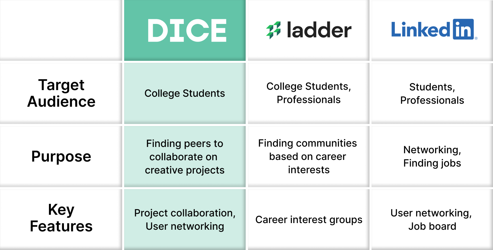
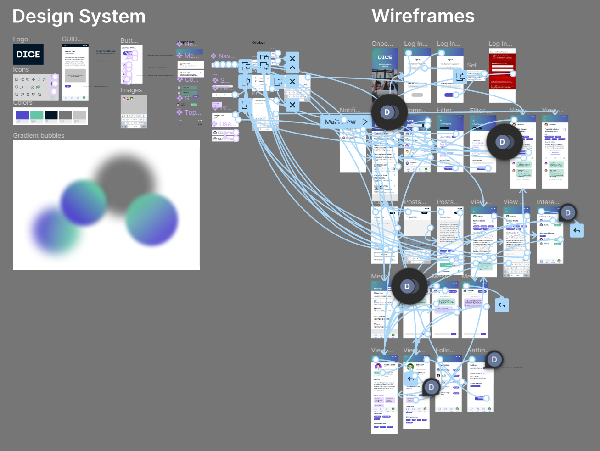

Introduction
DICE is an app for college students to find and post projects to work on with their peers. It allows users to discover projects that need their skills, ranging from coding to copywriting to filmmaking.
This project was developed by a team of 5 members from across a number of disciplines such as business, design, data science, and computer science.
Role
User Interface Designer | Researcher
Tools
Figma | Qualtrics
Duration
4 months
Problem Statement
When developing this app, we wanted to solve a problem which directly impacted students such as ourselves. As aspiring professionals in the user experience, the greatest issue we noticed was the hardships which students have in gaining experience and developing a portfolio outside the classes students normally take. And this need for experience goes beyond user experience; there's a number of other majors and careers which greatly benefit from portfolio work such as Theatre, Film, Computer Science, and Architecture.
Based on this observation, we wanted to create a platform that would allow students to find projects to work on, and to connect with other students to work on projects with.
User Research Process
To begin our product development, we first created Visual Value Propositions (VVPs) and some Scenarios, Storyboards, and User Stores.
We wanted to make sure that there truly was an audience for this type of platform. Although the VVP went through major iterations after this initial survey,
it paved the way for what we hoped to develop.
We asked a number of questions to determine how the effective the VVP's messaging was: What does the product do? Who is the product for? Then, after explaining our purpose, we asked
interviewees how we could improve our message.
This initial survey gave us good feedback on how we should brand DICE and also validated our problem and the existing audience for it. The following quotes are some comments we obtained about our initial VVP:
“The purpose is to connect designers, developers, and people within the tech space to create products together”
“I think it's for job applications and building resumes. The audience seems to be people who need others to do projects and people who want to do projects”
“Sounds like LinkedIn for UIUX designers, connecting clients to design firms. Mostly targeted toward UIUX designers. ”
Based on the responses, we noticed that there were some difficulties in the branding of our product, and we wanted to improve upon that for the next iterations of our VVP.
In this process, we also developed a comparative table for our product. We wanted to hone into the features our audience truly needed and create a business case for our product. We decided to compare our product to Ladder and LinkedIn, two other platforms who also focus on professional development. Despite the overlap in the target audience, we chose to differentiate ourselves with our purpose and key features. For example, the main purpose of DICE is to allow users to find peers to work on projects, with our key features being user collaboration and networking.
Wireframing
Our wireframe process began with the development of personas to give life to the potential users of our application. We wanted to use their generalized needs as a guiding point of our product.
Then was the beginning designs for our application, done in greyscale to layout the bases of the frames. We wanted to begin developing a design system of components before integrating color into our designs.
Low-Fidelity Testing
With the low fidelity frames completed, we wanted to get more feedback on our designs. To do so, we developed a Qualtrics survey which included an iteration of the Visual Value Proposition shown earlier and a flow of the experience with our greyscale wireframes.

From this session of testing, the visuals of the app allowed us to get more tangible feedback on what we can do to improve the frames. The following are some pain points and potential improvements which testers had commented on. It worked as guiding feedback as we worked toward prototyping and high-fidelity designs.
∎ Users seemed to want more information in the project description relating to deadlines and number of team members needed
∎ Users wanted a more detailed description of the logistical aspects of the project such as the time committment, desired experience levels, paid/unpaid, etc.
∎ Users wanted an easy way to find out if the project was going to be held online or in-person.
∎ Users wanted more specificity within the filter options.
Prototyping
As we worked toward high fidelity designs, we quickly designed a number of frames to give a prototype of our product. We completed our design system, which consisted of all the components, variants, and most importantly, the color scheme of our product.
High-Fidelity Designs
The final designs of these page included over 25 frames and a number of other overlays. The application revolves around the four tabs on the navigation bar: Home, Post, Message, and Profile. We wanted to emphasize the social/collaborative aspect of this application with this design. The following are only three of the many frames in this app design. If you'd like to view the design system and wireframes, feel free to click this link. Feel free to explore the interactive prototype as well, to view more of the designs and features.
Reflection
This project was my first time designing a product and developing a product pitch for it. It was extremely rewarding experience, working with my team to bring this idea to life over the span of four months. I gained a lot of experience working with Figma, especially in developing components and varients to create a design system. Because of how diverse the backgrounds of my teammates were, we were able to highlight each other's strengths and support one another in our weaknesses, making this one of my favorite experiences with a team.
Despite the completion of this product, DICE still has a number of features which could potentially be designed and developed. From where we left DICE, the future development mainly relates to communication and community building. Though stated in the pitch deck, I'd like to highlight the 3 main categories we hope to expand and improve upon:
∎ User-to-User Communication – allows users to join communities about certain projects and/or interests
∎ Cross-University Collaboration - expanding the scope of the application and allowing students from different universities to collaborate
∎ And based on user feedback and demand, the potential of In-App Group Communication – adding Project Groups/Group Direct Messages to keep users within DICE’s community, even after they’ve found their projects and groups